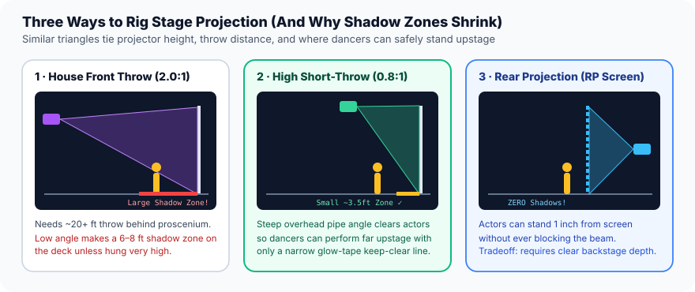
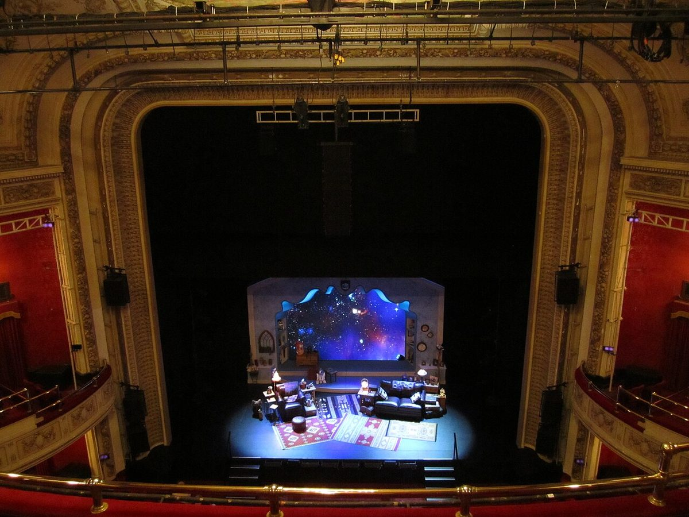

Audio, Lighting & Production Technology · Grades 9–12
Projection & Throw-Ratio Lab
A projector's lens and its distance from the screen aren't independent choices — together they determine exactly how wide the image lands. Pick a lens, slide the projector's distance from the screen, and see whether the image actually fits the venue in front of you.
Interactive: Fit the Venue
The venue: a 10 ft wide screen, with 24 ft of usable stage depth behind the audience for the projector.
Go Deeper: The Throw-Ratio Formula
Throw ratio = distance ÷ image width. A 1.5:1 lens set 15 ft from the screen throws a 10 ft wide image (15 ÷ 1.5 = 10). A "short-throw" lens (around 0.8:1) fills the same 10 ft screen from only 8 ft away — perfect for a shallow stage. A "long-throw" lens (around 2.5:1) needs 25 ft of distance for that same image — the right call in a large auditorium where the projector sits far from the screen, but useless in a cramped room.
Musical Stagecraft: Actor Shadow Dead-Zone & Front vs. Rear Projection
When a school musical projects animated backdrops (such as newspaper headlines in Newsies or the Cornwall sea horizon in The Pirates of Penzance), the scenic and lighting crew must solve two stage problems during pre-production:
- 1. The Actor Shadow Dead-Zone: If a front-projection lens hangs on an overhead pipe at height Hproj and throws down toward the upstage screen at distance Dthrow, any performer of height Hactor who steps too close to the backdrop intercepts the beam. By similar triangles, the downstage shadow dead-zone is dshadow = Dthrow × (Hactor ÷ Hproj). The Stage Manager spikes a glow-tape line at this distance on the Stage Plot so dancers never cross upstage into the beam.
- 2. Rear Projection (RP) vs. Ultra-Short-Throw (UST): Rear projection hides the projector behind a translucent upstage screen (zero actor shadows!), but requires empty backstage depth behind the cyc. Where backstage depth is tight, hanging a 0.5:1–0.8:1 short-throw projector high on the 1st or 2nd Electric keeps the shadow zone under 4 feet.
- 3. Stage Wash Spill & Shutter Cuts: Even an 8,000-lumen laser projector looks washed out if front stage lights hit the screen. During focus (Stage Lighting Lab), use Leko framing shutters and Fresnel barn doors to keep stage light off the top 80% of the projection surface.
Interactive Pre-Production Tool: Upstage Shadow Buffer Calculator
Drag the performer left/right across the stage deck or move the slider below to see when head shadows reach the screen.


Practice Problems
Easy1. A short-throw lens is the right pick for a stage with...
Easy2. With a 1.5:1 lens at 15 ft, what's the image width? (Width = Distance ÷ Ratio)
Medium3. If you move a fixed lens closer to the screen, the image gets...
Medium4. A venue only has 8 ft of usable throw distance but needs a 10 ft wide image. Which lens type is the only realistic option?
Challenge5. Using a long-throw (2.5:1) lens in this lab's 24 ft deep venue, what's the widest image you could ever project without running out of room?